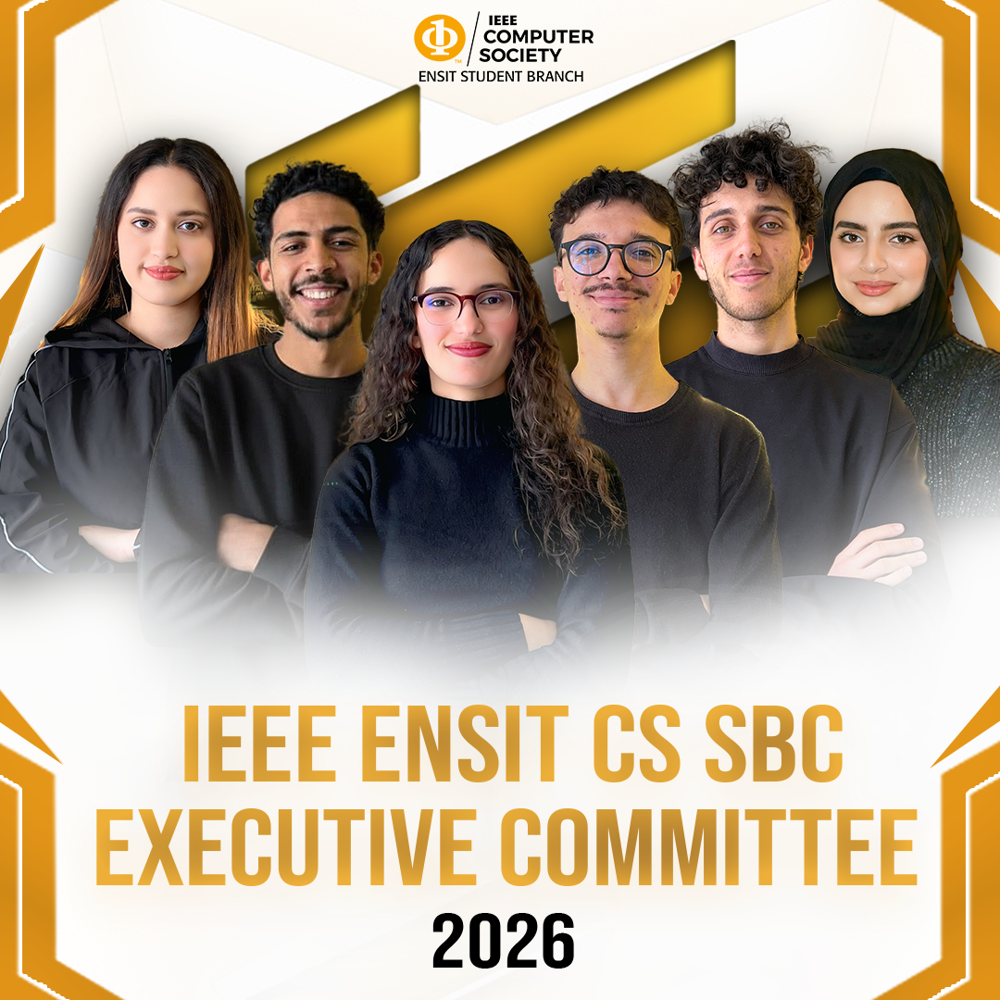
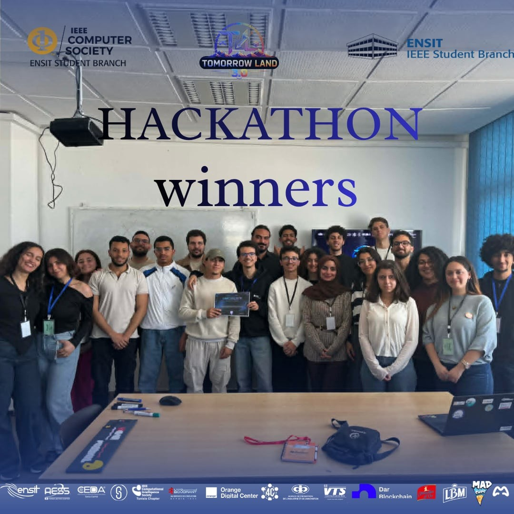
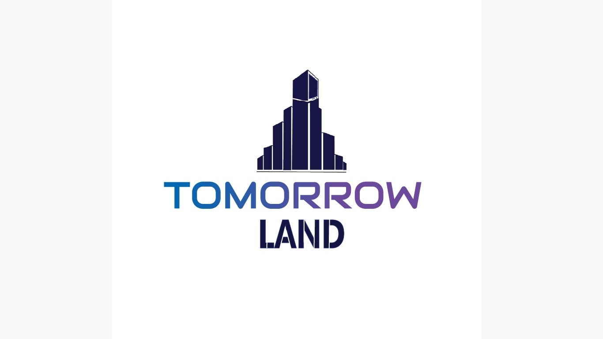
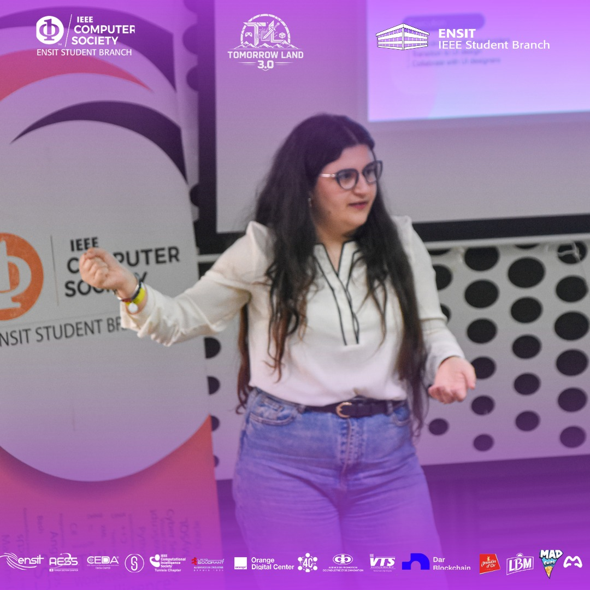

Artificial intelligence
Explore machine learning, generative AI, and intelligent systems.
AI_ IEEE ENSIT
IEEE ENSIT
IEEE ENSIT / Computer Society
Computing for the next wave
CS ENSIT is a community for curious minds exploring artificial intelligence, software engineering, cybersecurity, data, and the technologies shaping tomorrow.
Explore CSconst future = build(
ideas, people, technology
);
> systems online
> learning mode: always
_
More than code
IEEE Computer Society ENSIT connects students who want to understand how software, data, and intelligent systems are built—and how they can be used to solve meaningful problems.
We learn by doing: sharing knowledge, experimenting with emerging tools, and turning ambitious ideas into useful products.
The technology stack
Explore machine learning, generative AI, and intelligent systems.
AI_Design, build, test, and ship software that people can rely on.
{ }Think like a defender and learn how to protect digital worlds.
SECTurn information into insight with data platforms and cloud tools.
DB↗The people behind the projects


Learning in public
Workshops, competitions, and conversations that keep our community close to the technologies defining the future.

From concepts to intelligent applications.
Read more →
Tools, collaboration, and the open-source mindset.
Read more →A journey through the technologies of tomorrow.
Read more →
Fast thinking, hard problems, one global challenge.
Read more →
Discover the benefits of joining the computing community.
Read more →
Real conversations about careers, skills, and tech.
Read more →